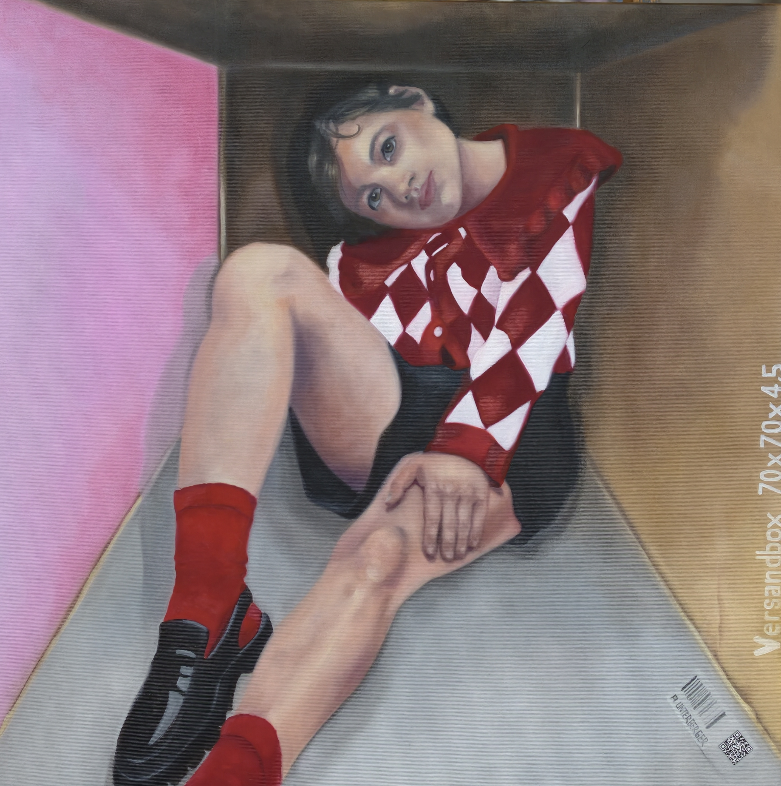

Öl auf Leinwand · 70 × 70 × 4,5 cm · 2026
Preis: € 2.300
Die Großstadt verspricht Freiheit, Nähe und grenzenlose Möglichkeiten - und wird zugleich zum engen Lebensraum. Die Figur sitzt eingepasst zwischen klaren Flächen, begrenzt von Architektur und Raum. Ihr direkter Blick widersetzt sich jedoch der Enge: aufmerksam, selbstbewusst und verletzlich zugleich. Kräftiges Rot, leuchtendes Rosa und das rhythmische Rautenmuster setzen einen lebendigen Kontrapunkt zur geometrischen Umgebung. Verdichtetes Leben erzählt vom urbanen Dasein zwischen Sichtbarkeit und Isolation, Anpassung und Individualität. Der Großstadtdschungel erscheint hier nicht als wildes Grün, sondern als Geflecht aus Wänden, Blicken und Erwartungen - ein Ort, an dem der Mensch seinen eigenen Raum behaupten muss.
The city promises freedom, connection, and limitless possibilities — yet at the same time, it becomes a confined living space. The figure sits fitted between clearly defined surfaces, restricted by architecture and space. Yet their direct gaze resists this confinement: attentive, self-assured, and vulnerable at the same time. Bold red, vibrant pink, and the rhythmic diamond pattern create a lively counterpoint to the geometric surroundings. **“Verdichtetes Leben”** tells of urban existence caught between visibility and isolation, adaptation and individuality. Here, the urban jungle does not appear as untamed greenery, but as a web of walls, gazes, and expectations — a place where individuals must assert a space of their own.